Причины заболевания
Опухоли позвоночника могут развиваться в костях, нервах и других тканях, образующих позвоночный столб. Если новообразование возникает изначально в позвоночнике, то такие опухоли называются первичными. Они могут быть доброкачественными образованиями, низкозлокачественными опухолями, которые растут медленно, или высокозлокачественными опухолями, которые растут агрессивно. Однако, большинство опухолей позвоночника являются метастатическими, что означает, что они попадают в позвоночник от первичных злокачественных опухолей из других частей тела.
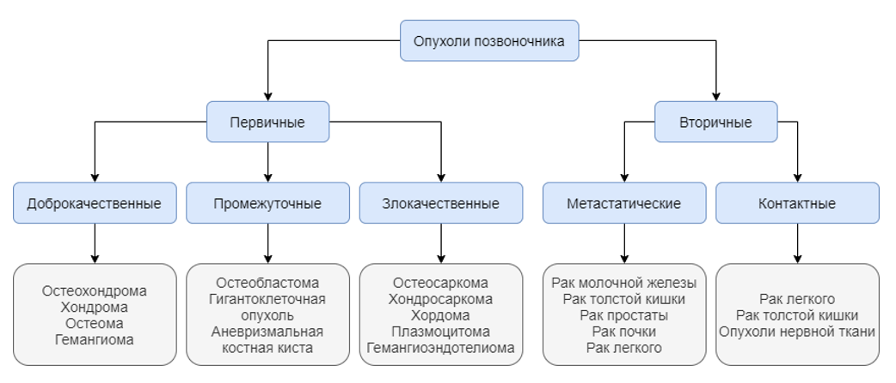
Причины возникновения большинства первичных опухолей позвоночника неизвестны. Некоторые из них могут быть связаны с воздействием канцерогенных факторов. В отдельных семьях наблюдается более высокая частота опухолей позвоночника, поэтому, скорее всего, существует генетический компонент. У пациентов со злокачественными заболеваниями наиболее часто встречаются метастазы рака молочной железы, рака почки и рака легкого.
Симптомы заболевания
Боли в спине, особенно в средней или нижней части, являются наиболее частым симптомом как доброкачественных, так и злокачественных опухолей позвоночника. Эти боли обычно не связаны с травмой или физической активностью. Тем не менее, боль может усиливаться при активных движениях или возникать ночью, когда пациент лежит. Боль может иррадиировать в конечности. Болевой синдром часто устойчив к консервативным методам лечения, которые применяют для лечения дегенеративно-дистрофических заболеваний. В зависимости от расположения и типа опухоли могут развиваться другие признаки и симптомы. По мере роста опухоли часто развивается компрессия спинного мозга и спинномозговых нервов.
К дополнительным симптомам могут относиться следующие:
- Потеря чувствительности или мышечная слабость в ногах, руках или грудной клетке;
- Ригидность шеи или спины;
- Трудность при ходьбе, которая может привести к падению;
- Снижение чувствительности к боли, теплу и холоду;
- Потеря функции кишечника или мочевого пузыря;
- Паралич, который может возникнуть в разных частях тела, в зависимости от того, какие нервы сдавлены опухолью;
- Сколиоз или другая деформация позвоночника в результате сильного разрушения позвоночника на фоне роста опухоли.
Осложнения
Осложнения, связанные с опухолями позвоночника, можно разделить на две группы:
- Осложнения, связанные с ростом опухоли, ее рецидивом или метастазами. Эти осложнения как правило нарушают функцию спинного мозга и спинномозговых нервов. Неврологические осложнения включают в себя боль, слабость в конечности при ущемления спинномозгового нерва и полный/неполный паралич при сдавлении спинного мозга.
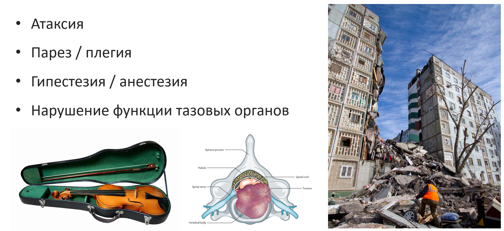
- Осложнения, связанные с хирургическим, лучевым или химиотерапевтическим лечением опухолей. Различные органы и ткани могут быть принесены в жертву во время операции для достижения радикальности. Различные структуры могут находиться на пути лучевой терапии. Либо у химиотерапии могут наблюдаться чрезмерные системные эффекты.
Патогенез
Последние достижения в области фундаментальных исследований опухолей опорно-двигательного аппарата показали, что сложность молекулярного процесса канцерогенеза может быть концептуально сведена к небольшому числу молекулярных, биохимических и клеточных признаков. Ханахан и Вайнберг описали ключевые признаки рака, представляющие собой фундаментальную концепцию онкогенеза.
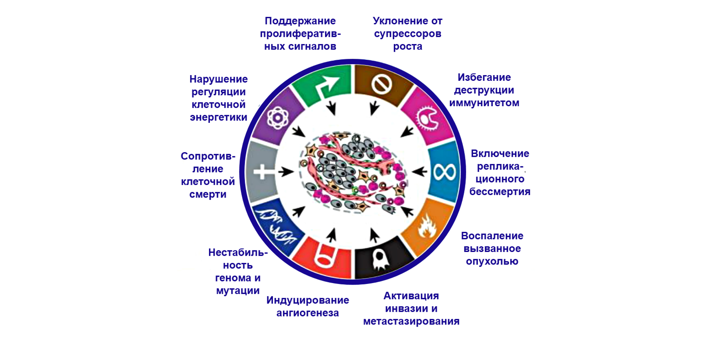
Всякий раз, когда нормальная клетка делится, ее теломеры (т.е. концы хромосом) укорачиваются до «точки невозврата», после чего клетка умирает. Раковые клетки могут выключать этот механизм, что позволяет им делиться бесконечно. Злокачественные клетки подавляют механизмы апоптоза (запрограммированной смерти). Также эти клетки обладают способностью имитировать внеклеточные сигналы роста, например, путем активации мутаций, для того чтобы опухоль росла. Злокачественные опухоли должны стимулировать свое собственное кровоснабжение, если они вырастают больше определенного размера. Природа такого ангиогенеза до сих пор полностью неясна. Опухолевые клетки могут выделять факторы формирования и роста кровеносных сосудов. Еще одной способностью злокачественных клеток является приобретение потенциала отщепляться от исходной опухолевой массы и мигрировать через внеклеточный матрикс в кровь или лимфатические сосуды, чтобы осесть в другом органе. Очевидно, что эти ключевые признаки представляют собой лишь рабочую модель. Текущая парадигма заключается в том, что для каждого типа опухоли есть свой набор признаков. Таким образом каждая опухоль имеет свою собственную молекулярно-генетическую схему.
Более ста лет назад была выдвинута гипотеза «семена и почва» в ответ на вопрос: «От чего зависит то, какой орган будет поражен в случае распространенного рака?». Ответ на вопрос по сути, остается актуальным и сегодня: «Микроокружение каждого органа (почвы) влияет на выживание и рост опухолевых клеток (семян)».
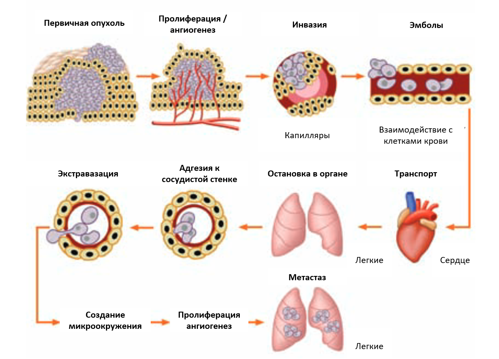
В метастатическом процессе первичная опухоль растет локально до тех пор, пока не достигнет определенных размеров. Тогда ее питание не будет обеспечиваться только за счет диффузии. Поэтому рост сосудов или ангиогенез присутствуют на ранней стадии опухоли. Опухоль отделяется от соседних клеток и проникает в окружающие нормальные ткани. Она стремится получить доступ к кровеносной и/или лимфатической системе. Так она распространяется в организме до тех пор, пока не прилипнет к капиллярам. Метастатическая опухолевая клетка затем проникает через стенку сосуда и попадает с током крови в ткани органа-мишени. Так может появиться метастаз в позвоночнике.
Диагностика
Тщательный осмотр с акцентом на характеристику болевого синдрома и неврологическую симптоматику является первым шагом к диагностике опухоли позвоночника. Для точной диагностики необходимы лучевые методы исследования.
Лучевые методы исследования
Первоначальным является рентгенологическое исследование несмотря на то, что часто встречаются ложноотрицательные результаты из-за сложной рентгенологической анатомии позвоночника и таза.
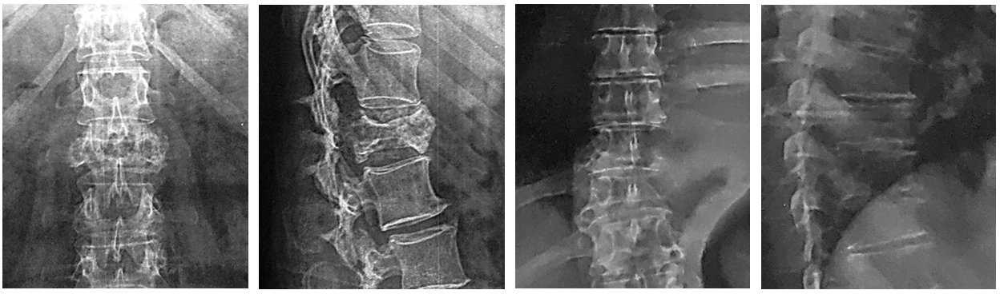
Рентгенологически определяются изменение структуры кости, вздутие тела позвонка и/или компрессионный перелом.
При подозрении на онкологический процесс несмотря на отрицательные результаты рентгенологического исследования, необходимо проведение компьютерной томографии (КТ) или магнитно-резонансной томографии (МРТ).
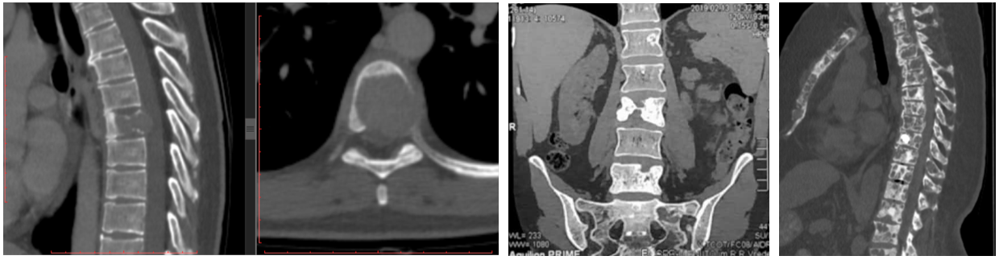
На КТ визуализируется разрешение костной ткани и/или злокачественное формирование новой костной ткани, может определятся паравертебральный мягкотканный компонент.
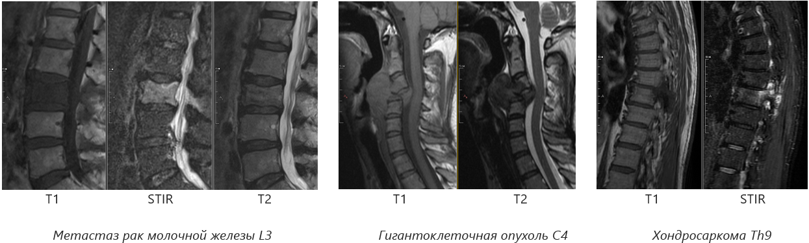
МРТ может показать спинной мозг, спинномозговые нервы и окружающие их мягкие ткани. МРТ хорошо визуализирует опухолевые массы.
Визуализирующие методы радионуклидной диагностики основаны на получении изображения, отражающего распределение введенных в организм пациента радиофармпрепаратов, специфически накапливающихся в различных органах и тканях. Радиофармпрепараты представляют собой определенные химические или биохимические соединения, меченные гамма-излучающими радионуклидами, имеющими короткий период полураспада.Препарат накапливается в органе или ткани, в котором есть повышенная метаболическая активность, которая является косвенным признаком онкологического процесса. Гамма-излучение регистрируется детектором гамма-камеры и после компьютерной обработки полученная информация преобразуется в функциональное изображение исследуемого органа. Пространственно-временная картина распределения радиофармпрепарата дает представление о форме, размерах и положении патологических очагов.
Лабораторные анализы
Общеклинические показатели онкологического процесса: анемия, лейкоцитоз, изменение лейкоцитарной формулы, повышение С-реактивного белка.
Специфические при множественной миеломе: моноклональные иммуноглобулины в плазме крови и/или моче, β-микроглобулин в плазме крови, М-градиент при электрофорезе сывороточных протеинов, легких цепей (протеины Бенса-Джонса) в моче 15.
Морфологическое исследование
Один из наиболее важных принципов онкохирургии – проведение биопсии. Биопсия позвонков является заключительным этапом диагностического этапа при подозрении на опухоль позвоночника.
Существует три типа биопсии:
- пункционная;
- открытая инцизионная;
- эксцизионная.
Для опухолей, локализованных в задних элементах позвонка эксцизионная биопсия, при которой удаляется новообразование целиком, является диагностической и одновременно лечебной процедурой. Пункционная биопсия проводится с помощью специальной иглы, приспособленной для проведения трепан-биопсий. Проводится пункционная биопсия под контролем флюроскопии или КТ-навигации. Точность исследования достигает 80-90%. Открытая инцизионная биопсия позволяет получить более достоверный гистологический диагноз в силу большего объема забираемого материала, однако риск распространения опухолевых клеток в окружающие ткани при такой манипуляции вдвое выше, чем при пункционной.
Классификация и стадии развития заболевания
Злокачественные опухоли позвоночника
Остеосаркома (остеогенная саркома): тип злокачественной опухоли который может возникнуть в позвоночнике, но чаще встречается в бедренных костях и голени.
Хондросаркома: опухоль, которая возникает из хрящевых клеток. Развивается как первичная опухоль в хрящевых структурах, которые формируют позвоночный столб.
Множественная миелома: злокачественная опухоль, который поражает клетки крови. Пораженные клетки собираются в костном мозге, часто поражается позвоночник.
Лимфома: группа злокачественных заболеваний, поражающих клетки иммунной системы, называемых лимфоцитами. Она может развиться в позвоночнике как первичная опухоль, но чаще возникает в других местах и распространяется на позвоночник.
Хордома: злокачественная опухоль кости, которая может развиться внутри позвоночного столба в любом месте. Однако, чаще всего она встречается в крестце (кость в основании позвоночника).
Саркома Юинга: опухоль, который может поражать как кость, так и окружающие ее мягкие ткани. Редко встречается у взрослых и составляет около 1 процента случаев рака детского возраста.
Доброкачественные опухоли позвоночника
Хотя в большинстве случаев эти опухоли позвоночника являются доброкачественными, небольшой процент из них могут стать злокачественными. Доброкачественные опухоли позвоночника могут вызвать проблемы, когда они вырастают достаточно большими, чтобы сдавливать спинной мозг или другие структуры.
Гемангиома: опухоль, который образуется из тканей кровеносных сосудов внутри позвоночного столба. Эти опухоли чаще встречаются на поверхности кожи, особенно у младенцев, но могут поражать и внутренние органы.
Остеоидная остеома: небольшая опухоль в кости, которая чаще встречается у детей и подростков.
Остеобластома: похожа на остеоидную остеому, но, как правило, более крупную и агрессивную.
Остеохондрома: опухоль, которая характеризуется избыточным ростом хряща и кости.
Гигантоклеточная опухоль (ГКО, остеобластокластома): опухоль, обязана своим названием тому, как она выглядит под микроскопом. Как правило, она содержит “гигантские” клетки с множеством ядер, которые образовались как несколько клеток, сплавленных вместе. Является локально-агрессивной опухолью.
Традиционно для оценки опухолей костей используются принципы, которые были заложены в классификации W.F. Enneking с соавторами.
В этой классификации существуют отдельные системы стадирования доброкачественных и злокачественных опухолей. Система стадирования доброкачественных опухолей состоит из трех категорий: скрытая (S1), активная (S2) и агрессивная (S3). Деление на категории основано на рентгенографических характеристиках края опухоли.
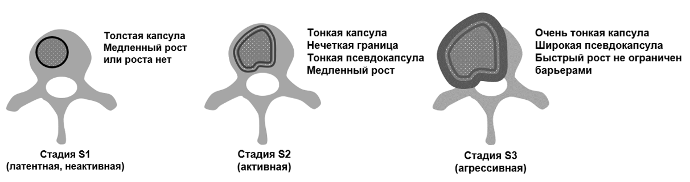
Система стадирования злокачественных опухолей учитывает степень злокачественности (G), локальное распространение (Т), а также наличие или отсутствие метастазов (М).
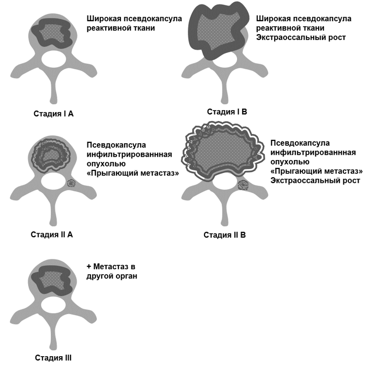
Система имеет 3 стадии: стадии I и II основаны на степени злокачественности опухоли. При II стадии из-за быстрого роста опухоли псевдокапсула реактивной ткани слабо выражена, имеет бреши, опухолевые клетки могут находится за ее пределами («прыгающие метастазы»). Вышеуказанные 2 стадии делятся на две подкатегории (A, B) в зависимости от локального распространения опухоли (экстраоссальный рост). III стадия представляет собой любую опухоль с очагами в других частях тела.
Лечение
Процесс принятия решения о лечении опухоли позвоночника часто носит междисциплинарный характер и включает в себя экспертные знания хирургов-вертебрологов, химиотерапевтов, онкологов-радиологов и других специалистов. Поэтому выбор методов лечения, осуществляется с учетом различных аспектов общего состояния здоровья пациента и преследуемых целей.
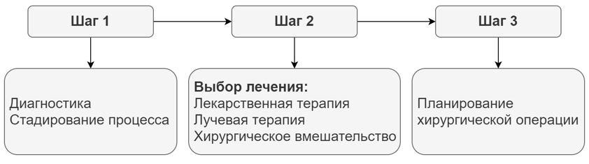
Консервативное лечение
Варианты нехирургического лечения включают: наблюдение, химиотерапию и лучевую терапию.
Опухоли, которые являются бессимптомными или сопровождаются малой симптоматикой и отсутствием прогрессивного роста, могут наблюдаться и контролироваться при помощи регулярных МРТ.
Некоторые опухоли хорошо реагируют на химиотерапию, а другие - на лучевую терапию. Лучевая терапия может быть использована для удаления остаточной опухоли после операции, для лечения неоперабельных опухолей или для лечения тех опухолей, при которых операция слишком рискованна. Химиотерапия является стандартным лечением многих видов рака.
Химиотерапия использует лекарственные вещества, чтобы уничтожить опухолевые клетки или остановить их рост. Однако, существуют специфические типы опухолей, которые по своей природе малочувствительны к лучевой или лекарственной терапии (например, хондросаркома, метастазы рака почки): в этих случаях вариантом лечения может быть оперативное вмешательство.
Минимально-инвазивное вмешательство
Минимально-инвазивное вмешательство означает использование методов, которые наносят минимальную травму организму пациента. Применительно к опухолям позвоночника таким методом является вертебропластика и ее производные.
Чрескожная вертебропластика является хирургическим методом, используемым для лечения болезненных гемангиом или метастатических очагов в угрозе патологического перелома.
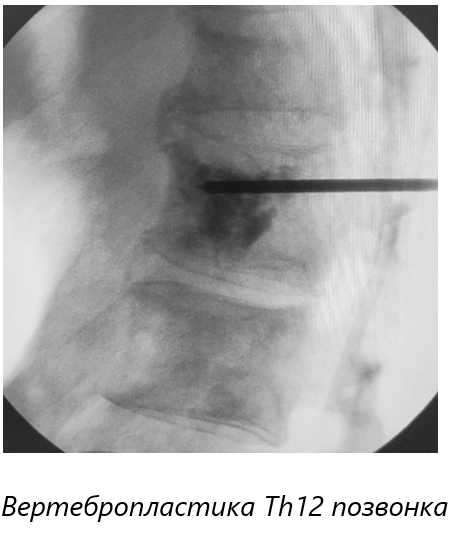
Во время вертебропластики производят инъекцию костного цемента в тело пораженного позвонка. Эта процедура чаще всего проходит под местной анестезией и не требует длительно пребывания в стационаре. Механизм действия полностью не изучен. Предполагается, что компоненты цемента разрушают нервные окончания в позвонке, вызывая длительный обезболивающий эффект. Для применения вертебропластики существуют ограничения. При значительном сильном разрушении позвонка опухолью и при наличии компрессии спинного мозга вертебропластика противопоказана.
Хирургическое лечение
Показания к операции варьируются в зависимости от типа опухоли.
Первичные (неметастатические) опухоли позвоночника могут быть удалены путем условно-радикальной операции (en bloc резекция). Условная радикальность удаления любой опухоли позвоночника связана с наличием эпидурального пространства, простирающегося от черепа до крестца. В эпидуральном пространстве позвоночного канала находится спинной мозг и нервы конского хвоста. Пересечение этих важных функциональных структур приведет к парализации и в большинстве случаев неприемлемо.
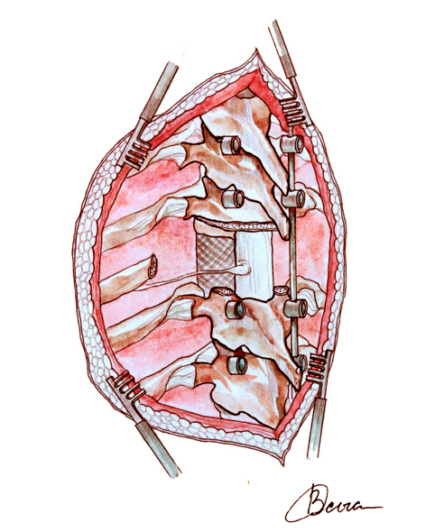
У пациентов с метастатическими опухолями лечение является, прежде всего, паллиативным, с целью восстановления или сохранения неврологической функции, стабилизации позвоночника и облегчения боли. Как правило, для пациентов с метастазами хирургическое лечение рассматривается только в том случае, если пациент может благоприятно перенести операцию и послеоперационный период, а опухоль устойчива к облучению или химиотерапии. Показания к операции включают в себя некупируемые боли, компрессию спинного мозга и необходимость стабилизации патологических переломов.
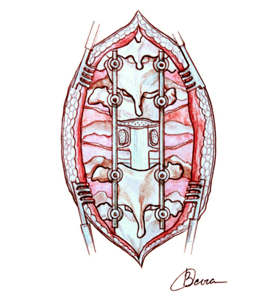
Если рассматривается возможность хирургического вмешательства, то доступ определяется расположением опухоли в позвоночнике. Задний доступ позволяет выполнить хорошую декомпрессию спинного мозга. Как правило такая декомпрессия сочетается с транспедикулярной фиксацией. Передний доступ хорошо подходит для опухолей, расположенных в передней части позвонка.
Прогноз и профилактика
Хотя такие факторы, как размер опухоли, стадия, тип, а также генетика играют важную роль в определении прогноза для пациентов с опухолью позвоночника, более первостепенным фактором онкологического прогноза является общее состояние пациента. При этом учитываются клинические проявления и данные лабораторных анализов. Вместе с тем, тип первичной опухоли является одним из ключевым факторов онкологического прогноза у пациентов с опухолями позвоночника. Тип зависит от молекулярно-генетической характеристики опухоли.
У многих пациентов с диагностированными костными метастазами успешно применяется терапия остеомодифицирующими агентами (ОМА: золедроновая кислота, деносумаб) для профилактики патологических переломов. При некоторых первичных опухолях (например гигантоклеточная опухоль) применение ОМА уменьшает травматичность хирургического лечения.